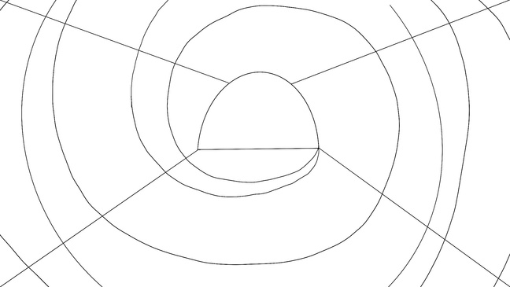
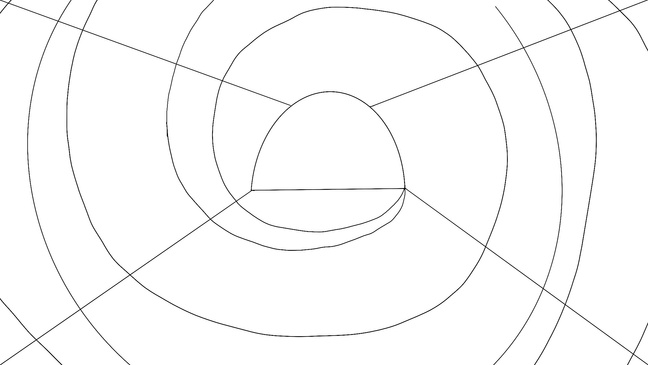

Lily of the Valley Project
A collection of the original visual development, design and animation work which resulted in the completion of my Final Major Project during my Art Foundation course. I created a conceptual sci-fi animation project about the singularity which I developed and came up with using my own ideas and research. The final piece was animated using keyframe animation and the pin-puppet tool in Adobe After Effects.Animating using the pin-puppet tool is a lot like 3D animation. Creating 'pin-puppets' of my original character designs is a lot like adding bones / joints to them, similar to rigging a model in 3D.


 


Click here to see the full development site for the project.